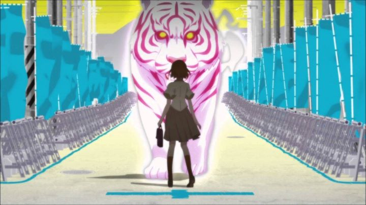

Disclaimer: This review covers the "second season" of the Monogatari series that started with "Bakemonogatari" and "Nisemonogatari." This review includes "Nekomonogatari (Black)" (Tsubasa Family), "Nekomonogatari (White)" (Tsubasa Tiger), "Kabukimonogatari" (Mayoi Jiangshi), "Otorimonogatari" (Nadeko Medusa), "Onimonogatari" (Shinobu Time), "Koimonogatari" (Hitagi End), and "Hanamonogatari" (Suruga Devil). Technically, "Nekomonogatari (Black)" is considered to be part of the "first series," but is included in this review based on its pattern with the others.Even almost a decade later, "Bakemonogatari" is a special thing. It was effortlessly stylish, funny, romantic, horrifying, smart, and fascinating. When I first saw it and it's sequel "Nisemonogatari," I was happy with all of it, and satisfied with how it ended. In total, that was 26 episodes, a healthy amount of content. Unfortunately, it didn't end. It was based on a series of light novels that was still ongoing; even at the time of this writing, in 2019, it is STILL ongoing. A series of new story arcs, labeled simply as "Monogatari - Second Season," was animated and broadcast between 2012 and 2014. In total, that's an extra 32 episodes, making the total episode count at the time to a whopping 58. And it isn't yet finished. I don't normally like long-running anime series, and coming out on Bluray from Aniplex USA, it isn't cheap to own a copy of the series: when paying $10 an episode, you tend to notice if the show runs longer than most. Aniplex USA took a different approach to releasing the "Monogatari" series at this point, for better or for worse. While the previous entries came in large, expensive chipboard boxes with 11+ episodes, this time, the individual story arcs were separated into their own packages, to purchase individually, each with 4 to 6 episodes, each named "XXX-monogatari" to follow the naming pattern. It matches the general pricing structure of about $10 per episode, plus and extra $10 for the cost of the fancy packaging or extra contents (for what it's worth, the cheaper paper slipcovers instead of the chipboard box left something to be desired). On one hand, this meant a fan could buy part of the series for as low as $49 USD, a seemingly much more affordable option to buying the lot, and even though buying EVERYTHING would ultimately be pricier than before, you would at least get more postcards and booklets for your money. Since the arcs each had their own start and end, fans could buy just the arcs they cared about, each named after the female character they most heavily featured.... except, the arc titles are a bit misleading. Often, if one girl's name is in the title, a different girl will at least as important (if not more so) to that story. And all of the arcs heavily reference events from not only "Bakemonogatari," but also arcs within "Second Season," so if you choose to skip any of the episodes, you'll likely be a bit lost. Treating the packaging of each arc as "their own story, without a number to tell you the order" makes it difficult to watch the episodes correctly without a wiki-guide next to you. In Japan, a full boxset with the whole of "Second Season" did eventually release, but it is unlikely outside audiences will get such an option, again making America's release the most expensive in the world for the die-hard fan. Being a direct sequel, "Second Season" takes place not long after "Bakemonogatari." To recap, the original show was about a series of supernatural apparitions affecting the lives of a collection of high-school girls, ultimately tasking high school student / hero / half-vampire / slightly-perverted boy Araragi to help them. Or, as the series kept reminding us, "only they can save themselves," even though Araragi did ultimately keep the peace in the town with each of them. "Second Season" is like an afterword or an epilogue of sorts. If "Bakemonogatari" was about Araragi helping each of the girls try to remove or fix the spiritual demon haunting them, then "Second Season" is about each of the girls helping themselves. In most of the cases, their issues were never really solved, and here, each girl learns to either fully fix their problem, or to accept the issue as a part of themselves, taking full responsibility. In fact, Araragi himself rarely appears in any of the arcs, usually only showing up at the end to realize "oh... you already have this under control."For all the girls, this means powerful character growth. Hanekawa gets the most growth: while giving her not one, but two full arcs at the beginning, right after taking up the last arc in "Bakemonogatari," makes one feel a little more tired of the character than I ought to have been (each arc treads the same type of material each time), by the end, she's a completely different character from whom we first saw, and the path she's taking seems to make her possibly more important to "Monogatari's" full story than even Araragi. Nadeko, partially for her young age, might have been a weaker character in the first season, but here, she fully accepts a darker side of herself, getting one of the more interesting arcs. That the story of each girl continues, not simply ending like a regular story, and that they each get opportunity for such self-reflection and growth... "Second Season's" characters feel more real than almost any in anime, as stylishly exaggerated as they might be. Ignore that all the issues with ghosts in the town happen to only this selection of cute high-school girls... But it makes clear that the show will never need to end, as long as it keeps making money. We could very well follow this pattern for the rest of these characters' lives, for many 100's of episodes more. And for what purpose? Even when new ideas come into play, it feels like many of the same themes occur over again. Notice that every arc is about a pre-established character: a couple interesting characters are introduced in this season, but their full purpose isn't explored (at least, not within this season). The same story-telling style is in full force, having characters speak conversations and long expositions for the entire episode. Often, a full 20 minutes is spent with characters trying to decide "what shall we do next?" In at least one instance, a character tried to skip to discussing the topic at hand, but the conversing character insisted on spending another five minutes on a unnecessary sidetrack. That's always been part of "Monogatari's" style, for better or for worse, but seems a bit worse here than before.... and yet, I wasn't bored. Even 50 episodes later, even when some of these arcs feel like they don't amount to anything and could be summarized with a single sentence, I was entertained. The dialogue is still witty and as funny as it's ever been. Some viewers will no doubt be bored, but if you are still invested in the characters and excited to see more, you'll appreciate the stories.Visually, "Second Season" is still effortlessly the most stylish production in televised anime. Sometimes, for great effect, the environment will shift to some impossible setting for metaphor, or costumes on characters will change every shot within the same scene. Even so, it does feel a bit like the show is simply going through the motions at this point. The animation is most subject: there seems to be a lot less of it, and what animation does exist, while good, isn't as exceptional as the action scenes in the previous seasons. Some episodes use still shots so heavily, I wouldn't be surprised if a single episode was created in a single week. The Japanese dub (no English dub available) is still great, if slightly more subtle, to better act out the more complex characterizations. Each arc still gets its own unique opening and ending theme, paired with a stylized animation: while not as memorable as "Bakemonogatari," they are still great J-POP songs, and the quality of the visuals still make them great music videos in their own right.Even after "Nisemonogatari," I didn't particularly feel tired of the show. After "Monogatari Series - Second Season," I was still pleasently entertained, and the dialogue is still solid. But the fatigue is starting to set in, and I do get the sense that "Second Season" is purposely trying to waste my time, laughing at me as it does so. But to stop watching now doesn't feel right either. "Monogatari" is Japanese for "story," and unlike before, "Second Season" feels like it lacks a solid conclusion, the thing every story needs. Since the next season is literally called "Final Season," I'm hopeful it will bring a sense of closure. For viewers, "Second Season" is exclusively for fans that have already seen the previous seasons. Ideally, you will have stopped at "Bakemonogatari" or "Nisemonogatari." If you proceed with this, over 50 episodes in and counting, be prepared to invest the time and money for the long haul.
- "Ani" More reviews can be found at : https://2danicritic.github.io/ Previous review: review_Monogatari_Series_-_Final_Season Next review: review_Mononoke